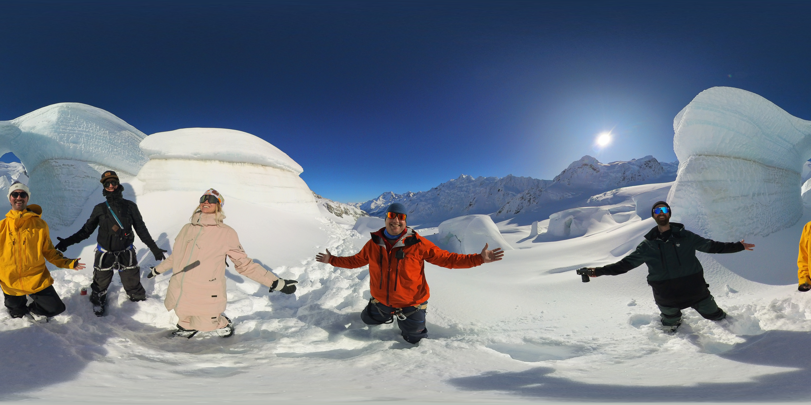

01 / 03 · Mirador de bienvenidaVisita 360°



Arrastra para mirar alrededor.
En VR, apunta con la mirada y espera o selecciona con el mando.
En VR, apunta con la mirada y espera o selecciona con el mando.
📍 Escena de bienvenidaCompatible con pantalla táctil y ratón · VR según dispositivo/navegador